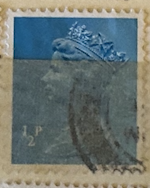
| SOURCE | TITLE| IMAGE MATCH | click to source page |
| eBay | Great Britain Scott #MH172 on Piece Used | eBay | 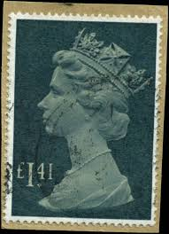 |
| eBay | Great Britain - 1973 - Queen Elizabeth II - 4 1/2P - Used - #02 | eBay | 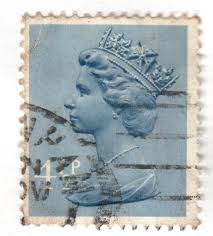 |
| eBay | Machine Cancel Decimal British Elizabeth II Stamps for sale | eBay | 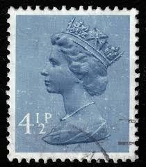 |
| BB Stamps | Decimal X Number Machins – Great British Stamps 1840 to DATE. Mint & Used GB Stamps | 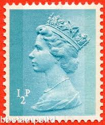 |
| HipStamp | Great Britain, Scott #MH383, used(o), 2009, Machin:Queen Elizabeth II, 2nd | Great Britain, Back of Book (Other) - Machin Head Stamp / HipStamp | 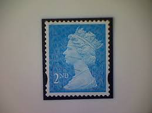 |
| Poppe Stamps | Poppe Stamps: Great Britain, 1971, X946, Numbers - Values And Letters - Characters, Queen Elizabeth Ii, Numbers - Values And Letters - Characters, Queen Elizabeth Ii, Decimal Currency, Decimal Currency - stamps | 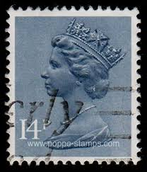 |
| Poppe Stamps | Poppe Stamps: Great Britain, 1971, X946, Numbers - Values And Letters - Characters, Queen Elizabeth Ii, Numbers - Values And Letters - Characters, Queen Elizabeth Ii, Decimal Currency, Decimal Currency - stamps | 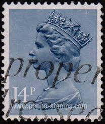 |
| Dreamstime.com | 326 Portrait Queen Mary Stock Photos - Free & Royalty-Free Stock Photos from Dreamstime | 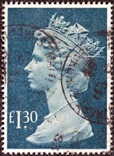 |
| HipStamp | Great Britain #629A 4 1/2P Queen Elizabeth 2, Stamp used VF | Great Britain, General Issue Stamp / HipStamp | 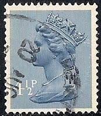 |
| maritimestandard.net | Home | Maritime Standard | 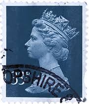 |
| HipStamp | GB Used QEII Machin (BP85919) | Great Britain, Stamp / HipStamp | 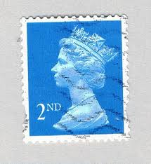 |
| Rodrigo Magrini Rossi Cunha (rmagrini) - Profile | Pinterest | 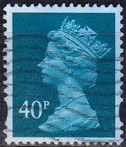 | |
| eBay | GB Missing Omitted Phosphor Errors (Multiple Listing) MNH Unmounted Mint MNH | eBay | 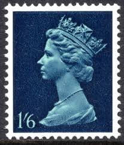 |
| ProBoards | Machin SW UV scans | The Stamp Forum (TSF) | 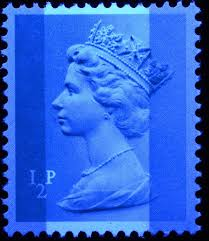 |
| eBay | Great Britain Scott #MH176 Used Machin 5£ bl & pink $$ os2 | eBay | 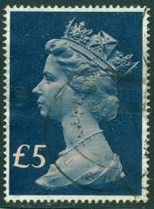 |
| Shutterstock | Uk Circa 2011 British Stamp Her Stock Photo 2687623757 | Shutterstock | 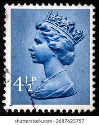 |
| Mystic Stamp Company | MH97//99 - 1980-91 Great Britain - Mystic Stamp Company | 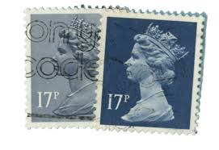 |
| Poppe Stamps | Poppe Stamps: Great Britain, 1967, 743, Numbers - Values And Letters - Characters, Queen Elizabeth Ii, Decimal Issue - stamps for sale by theme and country | 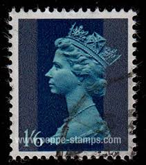 |
| eBay | Great Britain stamps - Queen Elizabeth II 14p British penny 1981 Sg:GB X946 | eBay | 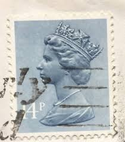 |
| allnumis.com | 10 1/2 Pence 1978 - Elizabeth II, 1978 - Great Britain - Stamp - 51975 | 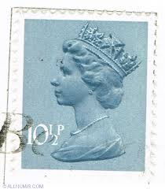 |
| Shutterstock | 6 1971h Royalty-Free Images, Stock Photos & Pictures | Shutterstock | 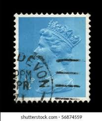 |
| HipStamp | SGX902 14p Machin IMPERF no gum | United States, Stamp / HipStamp | 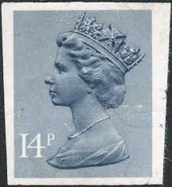 |
| seemystamps.com | See My Stamps! - A Place to Show Off Your Stamp Collection | Page 125 |  |
| Collect GB Stamps | British Stamps for 1971 : Collect GB Stamps | 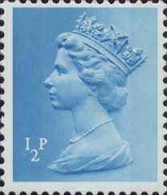 |
| Alamy | Queen elizabeth ii decimal machin normal perfs hi-res stock photography and images - Alamy | 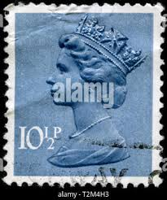 |
| eBay | Queen Elizabeth II Great Britain 1968 stamp | eBay | 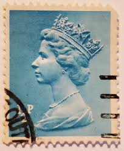 |
| eBay | UK - 1970 - Queen Elizabeth II - 50P - #2497 | eBay | 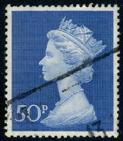 |
| vividagallery.com | United Kingdom Queen Elizabeth Machin Deep Orange Royal Profile Tapestry by Vivida Gallery - Vivida Gallery | 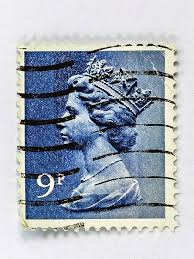 |
| chesterfieldsofa.dk | Stamps Vs 100 Pcs Postage Stamp Roll - 2019 Edition Valid For Domestic Mail & Everyday Use Postage Stamps Roll | 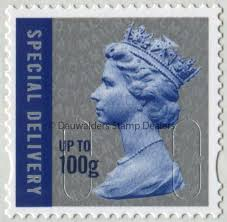 |
| stampio.org | Philately and Stamp Collecting: September 9th in stamps Tolstoy, Elizabeth II, Mao Zedong | 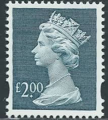 |
| seemystamps.com | See My Stamps! - A Place to Show Off Your Stamp Collection | Page 31 | 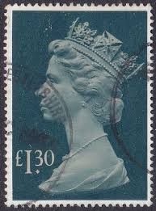 |
| Redbubble | "Blue Queen Elizabeth Vintage Postage Stamp" Canvas Print for Sale by Factory57 | Redbubble | 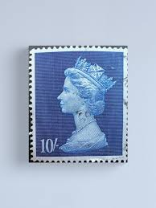 |
| eBay | Great Britain - 1967 - Definitives-Queen Elizabeth II - 1Sh 6P - Used - #1 | eBay | 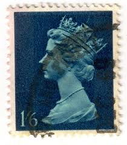 |
| Dauwalders | Diamond Jubilee With Source Code SGU3272-79 | 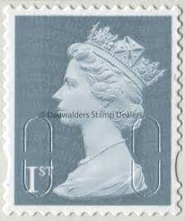 |
| Dreamstime.com | Vintage 1973 Emergency TV Show Collectible Lunchbox. Editorial Stock Photo - Image of emergency, shop: 163789598 | 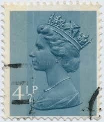 |
| Royal Portrait of Queen Elizabeth II | 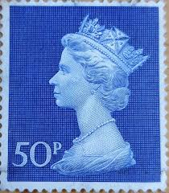 | |
| Shutterstock | Uk Circa 2011 British Stamp Her Stock Photo 2687623773 | Shutterstock | 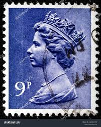 |
| Pngtree | 24 Foto Mahkota Inggris, Gambar Dan Background Untuk Unduh Gratis - Pngtree | 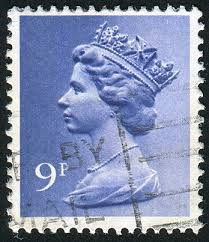 |
| Flickr | old stamp England GB UK 1/2p 0.5p Great Britain machin 1/2… | Flickr | 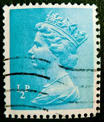 |
| Flickr | Views: 100 | Flickr | 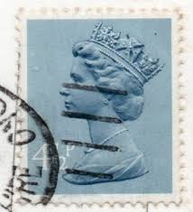 |
| eBay | Uncertified 1 Number Great Britain Elizabeth II Machin Definitive Stamps for sale | eBay | 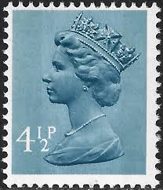 |
| eBay | Pre-Decimal 9p Denomination British Elizabeth II Stamps for sale | eBay | 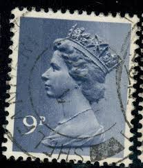 |
| eBay | Great Britain #MH20 Used WDW Philatelic (F8D) (9/24) | eBay | 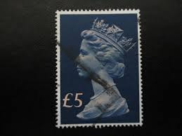 |
| Dauwalders | DY39 Industrial Revolutions | 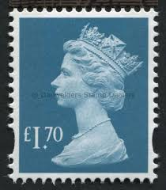 |
| commonwealthstamps.com | Postage Stamps of Great Britain Queen Elizabeth II Pre Decimal - Page 4 | 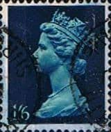 |
| HipStamp | Great Britain MH167 Queen Elizabeth II 1970 | Great Britain, Back of Book (Other) - Machin Head Stamp / HipStamp | 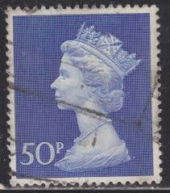 |
| Shutterstock | 3+ Hundred Elizabeth Ii Stamp Blue Royalty-Free Images, Stock Photos & Pictures | Shutterstock | 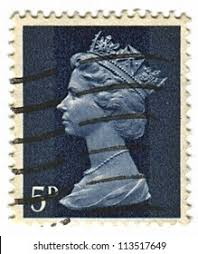 |
| ebid.net | GB, Queen Elizabeth II, Machin, blue 1967, 1/6, #2 on eBid United States | 205891072 | 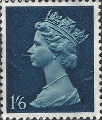 |
| eBay | Seasonal, Christmas British PHQ Cards for sale | eBay | 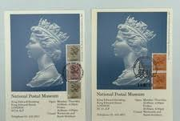 |
| PDF of the Vickers M15 instructions. | 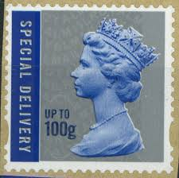 | |
| eBay | Great Britain - 1971 - Queen Elizabeth II - 3P - Used - #49 | eBay | |
| Few from the collection : r/stampcollecting | ||
| Albany Stamps | SG X842 ½p left band | |
| Paul Fraser Collectibles | 5 rare GB stamps for beginners to buy | |
| Stamp Auction Network | catalog Level 3 | |
| eBay | Great Britain - 1981 - 14P - Queen Elizabeth II - #18283 | eBay | |
| eBay | Great Britain - 2009 - 2nd - Definitive Issue - Queen Elizabeth II - #18261 | eBay | |
| HipStamp | Great Britain - Mh67 - Used - Scv-0.25 | Great Britain, Stamp / HipStamp | |
| eBay | GREAT BRITAIN MH97 (SG952) - Queen Elizabeth II "1980 Blue Grey" (pc25808) | eBay | |
| Dreamstime.com | 6,636 Queen Elizabeth Ii Photos Stock Photos - Free & Royalty-Free Stock Photos from Dreamstime - Page 12 |